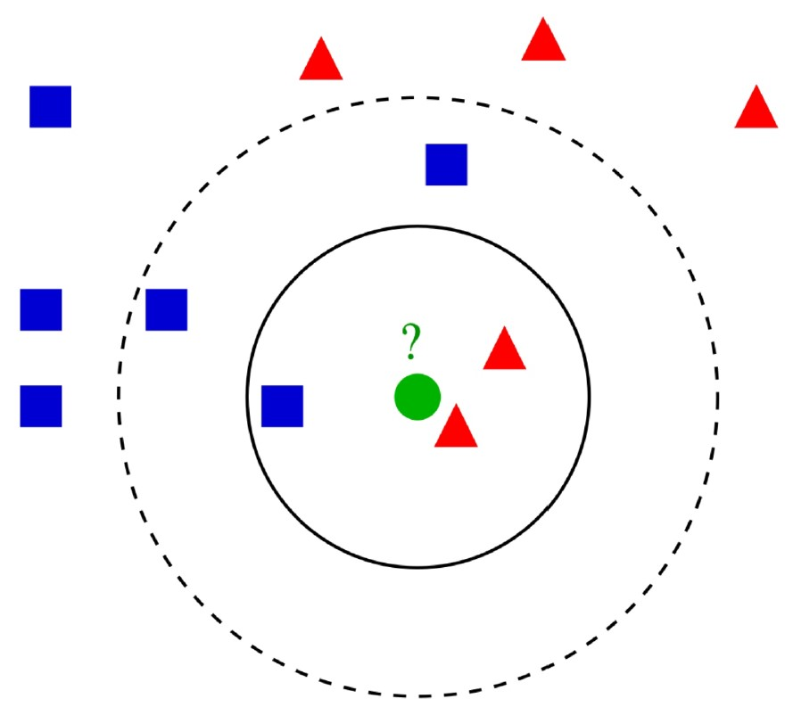

De la IA Clásica al Aprendizaje Automático
Unidad introductoria al paradigma actual de la IA
2.1.- Aprendizaje Automático y Estadística
Como ya hemos, la evolución de la inteligencia artificial se ha basado en tratar de ser capaz de actuar como los humanos, en primera instancia, y tratar de predecir el comportamiento más probable o deseable de un sistema en el planteamiento más actual. Para esto, las técnicas más prometedoras son las que utilizan modelos probabilísticos que, precisamente, son capaces de modelizar mejor los datos observados.
Podemos afirmar que la estadística y el aprendizaje automático convergen al aplicar las mismas técnicas de análisis para dar respuesta a una misma cuestión: ¿cómo aprendemos de los datos?[14]. En las siguientes secciones veremos cómo se apoya la inteligencia artificial actual en la ciencia de los datos.
Relación entre Estadística y Machine Learning
Pero concretando más, explica:
"Las estadísticas enfatizan la inferencia estadística formal (intervalos de confianza, pruebas de hipótesis, estimadores óptimos) en problemas de baja dimensión (conjuntos de datos más pequeños) y el aprendizaje automático se centra más en hacer predicciones precisas de alta dimensión (grandes conjuntos de datos)"[15].
Ambos métodos se centran en extraer conocimiento o ideas de los datos, pero sus métodos se ven afectados por sus diferencias culturales inherentes. La razón principal de que estos temas sean efectivamente los mismos es que cubren casi exactamente el mismo material y usan casi exactamente las mismas técnicas.
Además, cada paso en un proyecto de Machine Learning requiere el uso de un método estadístico. Tanto para comprender los datos utilizados en el entrenamiento de un modelo de aprendizaje automático como en la interpretación de los resultados obtenidos tras probar diferentes modelos de aprendizaje automático, se requieren métodos estadísticos.
2.2.- Modelos Bayesianos
El teorema de Bayes proporciona una manera de calcular la probabilidad de una hipótesis basada en su probabilidad previa, las probabilidades de observar diversos datos dada la hipótesis y los datos observados en sí[17].
El teorema de Bayes también proporciona una forma de pensar sobre la evaluación y selección de diferentes modelos para el desarrollo de un conjunto de datos en el aprendizaje automático aplicado. Maximizar la probabilidad de que un modelo se ajuste a un conjunto de datos se conoce más generalmente como máximo a posteriori, o MAP para abreviar, y proporciona un marco probabilístico para el modelado predictivo.
Teorema de Bayes
El Teorema de Bayes enunciado por el matemático inglés Thomas Bayes (1702-1761) es un sistema de cálculo de probabilidades pero hecho de forma inversa a cómo se calculan habitualmente[18].
Tiene en cuenta la información que conocemos que se ha producido en determinado entorno con determinados factores para saber cuáles de esos factores han producido esas consecuencias.
Es decir, conociendo las consecuencias que se producen podemos calcular sus orígenes (siempre en porcentajes) y la probabilidad de que se hayan producido en uno u otro grupo.
Donde B es el suceso que conocemos, A el conjunto de posibles causas, excluyentes entre sí, que pueden producirlo y, por tanto, P(A|B) son las probabilidades a posteriori, P(A) las posibilidades a priori y P(B|A) la posibilidad de que se dé B en cada hipótesis de A.
Modelo Probabilístico
Un algoritmo o modelo de aprendizaje automático es una forma específica de pensar sobre las relaciones estructuradas en los datos. De esta manera, un modelo puede considerarse como una hipótesis sobre las relaciones en los datos, como la relación entre la entrada (X) y la salida (Y). La práctica del aprendizaje automático aplicado es la prueba y el análisis de diferentes hipótesis (modelos) en un conjunto de datos dado.
El Teorema de Bayes proporciona un modelo probabilístico para describir la relación entre los datos (D) y una hipótesis (H). Si lo representamos con una fórmula simplificada:
donde la probabilidad de una hipótesis h dados unos datos D, puede calcularse como la probabilidad de observar los datos dada la hipótesis, multiplicada por la probabilidad de que la hipótesis sea verdadera independientemente de los datos, y dividido todo por la probabilidad de observar esos datos independientemente de la hipótesis.
Algoritmos Naive Bayes
Los modelos de Naive Bayes son un tipo de algoritmos de aprendizaje automático basados, como su nombre indica, en el teorema de Bayes. En ellos, se asume que las variables de entrada son independientes entre sí. Esto es simplificar mucho, pero de ahí viene el nombre "naive" o inocente[19].
Principales Ventajas
- Es una manera fácil y rápida de predecir clases, para problemas de clasificación binarios y multiclase.
- En los casos en que sea apropiada una presunción de independencia, el algoritmo se comporta mejor que otros modelos de clasificación, incluso con menos datos de entrenamiento.
- El desacoplamiento de las distribuciones de características condicionales de clase significan que cada distribución puede ser estimada independientemente como si tuviera una sola dimensión. Esto ayuda con problemas derivados de la dimensionalidad y mejora el rendimiento.
Principales Desventajas
- Aunque son unos clasificadores bastante buenos, los algoritmos Naive Bayes son conocidos por ser pobres estimadores. Por ello, no se deben tomar muy en serio las probabilidades que se obtienen.
- La presunción de independencia Naive muy probablemente no reflejará cómo son los datos en el mundo real.
- Cuando el conjunto de datos de prueba tiene una característica que no ha sido observada en el conjunto de entrenamiento, el modelo le asignará una probabilidad de cero y será inútil realizar predicciones.
Filtrado de spam: Los clasificadores Naive Bayes son ampliamente utilizados para identificar correos electrónicos no deseados basándose en la frecuencia de palabras.
Análisis de sentimientos: Clasificación de opiniones como positivas, negativas o neutrales en redes sociales y reseñas de productos.
Diagnóstico médico: Predicción de enfermedades basándose en síntomas observados, especialmente útil cuando los síntomas son relativamente independientes.
2.3.- KNN (K-Nearest Neighbors)
El método "K Nearest Neighbors" o los "K vecinos más cercanos" es un modelo de aprendizaje automático supervisado muy sencillo pero efectivo que se suele usar en problemas de clasificación[20]. Se basa, fundamentalmente, en dada una distribución de casos situados en un mapa de coordenadas, clasificar un nuevo caso mirando los casos que tiene alrededor. Si la mayoría son de una clase A, el nuevo caso se clasificará como de esa misma clase A.
Método de Clasificación No Paramétrico
Este es un método de clasificación no paramétrico, que estima el valor de la función de densidad de probabilidad o directamente la probabilidad a posteriori de que un elemento x pertenezca a la clase C a partir de la información proporcionada por el conjunto de prototipos. En el proceso de aprendizaje no se hace ninguna suposición acerca de la distribución de las variables de entrada del problema.
Este algoritmo no "aprende", no se entrena ni se fijan valores de parámetros internos. Simplemente se utiliza el conjunto de datos como "base de conocimiento" y se hacen las predicciones sobre dicha base. Esto puede ser un inconveniente, pues cada vez que hay que hacer una predicción, se utiliza todo el dataset, y esto requiere de memoria y recursos de procesamiento importantes si estamos trabajando con un volumen grande de datos.
Funcionamiento del Algoritmo KNN
Calcular Distancias
Se calcula la distancia entre el ítem a clasificar y el resto de ítems del dataset de entrenamiento. Las métricas más comunes son la distancia Euclidiana, Manhattan, o Minkowski.
Seleccionar K Vecinos
Se fija el parámetro K a un cierto valor y se seleccionan los "K" elementos más cercanos (con menor distancia, según la función que se use).
Votación de Mayoría
Se realiza una "votación de mayoría" entre los k puntos: los de una clase/etiqueta que sean mayoría, decidirán su clasificación final.
A la hora de utilizar este algoritmo, es importante elegir bien el valor del parámetro K, pues este terminará casi por definir a qué grupo pertenecerán los puntos, sobre todo en las "fronteras" entre grupos.
K muy pequeño: Puede hacer que el ruido o cualquier anomalía nos lleve a una clasificación errónea. El modelo será muy sensible a valores atípicos.
K muy grande: Hace que se generalice tanto la densidad de las clases que perdemos definición. Las fronteras de decisión se vuelven muy suaves.
Recomendación: Es recomendable no elegir valores pares de K para evitar "empates" en la votación de clasificación.
Aplicaciones Prácticas de KNN
Sistemas de recomendación: Netflix y Amazon utilizan variantes de KNN para recomendar productos o contenido basándose en usuarios similares.
Reconocimiento de patrones: Clasificación de dígitos manuscritos (como en el dataset MNIST), reconocimiento facial, y detección de anomalías.
Diagnóstico médico: Clasificación de tumores como benignos o malignos basándose en características similares de casos previos.
Predicción crediticia: Evaluación del riesgo crediticio comparando perfiles de clientes con historiales conocidos.
from sklearn.neighbors import KNeighborsClassifier
from sklearn.model_selection import train_test_split
from sklearn.datasets import load_iris
from sklearn.metrics import accuracy_score
# Cargar dataset de ejemplo (Iris)
iris = load_iris()
X_train, X_test, y_train, y_test = train_test_split(
iris.data, iris.target, test_size=0.3, random_state=42
)
# Crear modelo KNN con k=5
knn = KNeighborsClassifier(n_neighbors=5)
# Entrenar (almacenar datos)
knn.fit(X_train, y_train)
# Predecir
y_pred = knn.predict(X_test)
# Evaluar precisión
accuracy = accuracy_score(y_test, y_pred)
print(f"Precisión del modelo: {accuracy:.2f}")